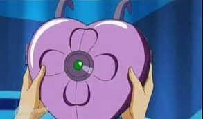
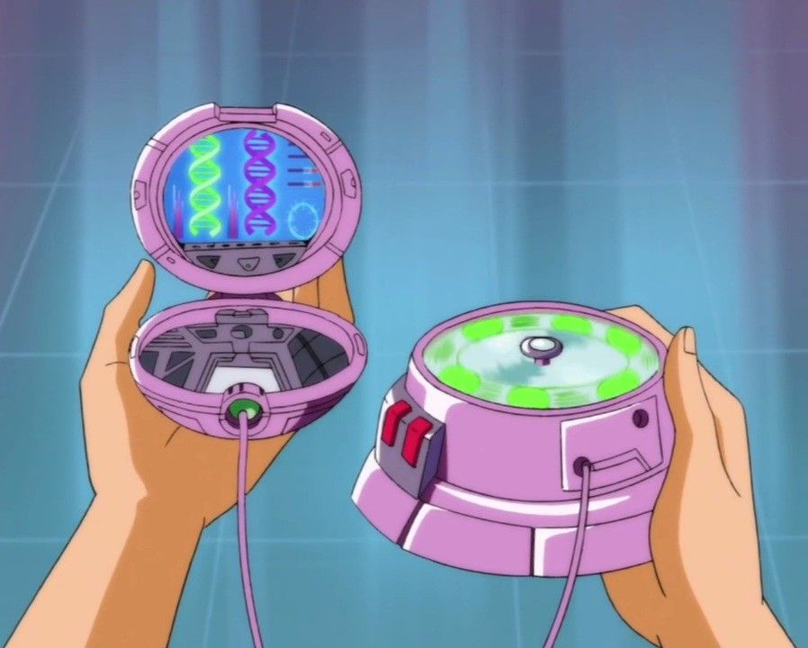
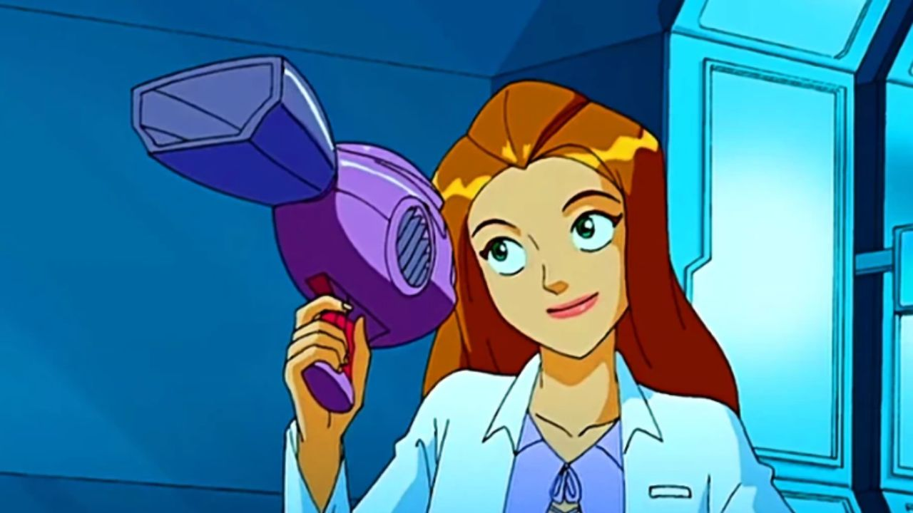

É um apetrecho/veículo da WOOHP. Comumente chamada de Mochila à Jato, pode se camuflar em uma mochila qualquer. Ela equipa os Apetrechos e um Paraquedas.
Nossos equipamentos


É um comunicador disfarçado de pó compactor sever como telefone e da fazer análises de materiais.
Compowder

É um apetrecho analizador de materia e dna portátil.
Mini-Laboratório

Utilizado diversas vezes, ele funcionava literalmente como um túnel de vento, sendo capaz de liberar fortes rajadas de ar capazes de afastar ataques e inimigos, os jogando para longe com um único jato.